07 · SRv6 L2VPN（EVPN）：二层业务的四个行为
本章定位：原书第 7 章《SRv6 L2VPN》。灰色英文块是原文摘录，紧随其后的中文是该段完整翻译，必要时补工程注解。书中的 Figure 7.1–7.4 按原文描述用 ASCII 重绘。配置与命令输出参照原书 Example 7.1–7.5，按 IOS XR 风格保留。
本章要拿到的东西：
| 问题 | 对应小节 |
|---|---|
| 二层为什么需要四个行为，不能只用一个 | 7.1 |
End.DX2 / DX2V / DT2U / DT2M 各自的查表动作 |
7.2 |
| EVPN 路由类型一个都没改，改的是哪个字段 | 7.3 |
| 多归为什么用 anycast SID 就能自动逐流分担 | 7.4 |
| DF 选举为什么仍然必须存在 | 7.4.1 |
| E-Line 海量部署时 SID 怎么不炸 | 7.5 |
| 二层场景里 MTU 为什么比三层更要命 | 7.6 |
一句话概括本章与第 6 章的关系：三层 VPN 换掉的是一个"VRF 标签"，二层 VPN 换掉的是一个"VLAN/BD 标签"，但二层的转发语义比三层多出一倍——三层只有"查表投递"一种动作，二层有"点对点送出、按 VLAN 查、未知泛洪、组播复制"四种动作，所以行为也从一个变成了四个。
7.0 本章拓扑
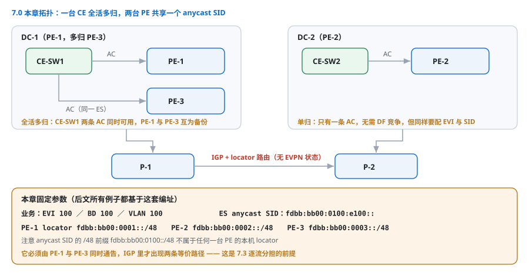
图 7-1：本章拓扑（原书 Figure 7.1 重绘）
DC-1（PE-1，多归 PE-3） DC-2（PE-2）
┌────────────────────────┐ ┌────────────────────────┐
│ CE-SW1 ── AC ── PE-1 │ │ CE-SW2 ── AC ── PE-2 │
│ │ │ │ │ │
│ └── AC ── PE-3 │ │ │
│ （同一 ES，全活多归） │ │
└────────────────────────┘ └────────────────────────┘
│ │
└──────── P-1 ──── P-2 ──────────────────┘
（只跑 IGP + locator，无 EVPN 状态）
业务：EVI 100 / BD 100 / VLAN 100
PE-1: locator fdbb:bb00:0001::/48
PE-2: locator fdbb:bb00:0002::/48
PE-3: locator fdbb:bb00:0003::/48
ES anycast SID（PE-1 与 PE-3 共享）: fdbb:bb00:0100:e100::
点击矢量图可放大查看。
| 角色 | 需要配置的东西 | 不需要的东西 |
|---|---|---|
| PE-1 / PE-3 | locator、bridge-domain、EVI、ESI、EVPN 邻居 | — |
| PE-2 | 同上 | — |
| P-1 / P-2 | locator 路由 | EVPN、BD、EVI、MAC 表 |
| CE-SW | 普通二层交换机 | 全部 SRv6 概念 |
7.1 二层业务的四种转发语义
Layer 2 services need different behaviors depending on whether the frame must be sent out of one specific attachment circuit, looked up by VLAN, flooded to unknown destinations, or replicated to a set of remote peers. SRv6 defines End.DX2 for a single cross-connect, End.DX2V for VLAN-aware bundle services, End.DT2U for unknown unicast flooding, and End.DT2M for multicast and broadcast replication.
二层业务的转发语义比三层复杂，因此 SRv6 定义了四个行为，分别对应四种动作：
| 行为 | 行为码（RFC 8986） | uSID 别名 | 语义 | 对应业务 |
|---|---|---|---|---|
End.DX2 |
0x0020 | uDX2 | 剥外层，从指定 AC 发出（不查表） | E-Line（点到点） |
End.DX2V |
0x0021 | uDX2V | 剥外层，按 VLAN 查表出 | VLAN-aware bundle |
End.DT2U |
0x0022 | uDT2U | 未知单播 → 查 MAC 表并泛洪 | E-LAN |
End.DT2M |
0x0023 | uDT2M | 组播/广播 → 复制到一组 AC（Arg 携带 BD） | E-LAN |
End.DT2M carries an argument that identifies the broadcast domain, so a single SID can serve many bridge domains on the same PE. End.DX2 needs no lookup at all: the SID itself points to exactly one attachment circuit, which makes it the most efficient option for large numbers of point-to-point E-Line services.
End.DT2M 的 Argument 里携带广播域（BD）标识，所以一个 SID 就能服务同一台 PE 上的多个桥域。End.DX2 完全不做查找：SID 本身就指向唯一一条 AC，因此它是海量点到点 E-Line 的最高效选择——阿里 VPWS 就是靠 32 bit Wide uSID 走这条路（第 15 章）。
把四种动作放到一张流程图上，看清"查表在哪一步"：
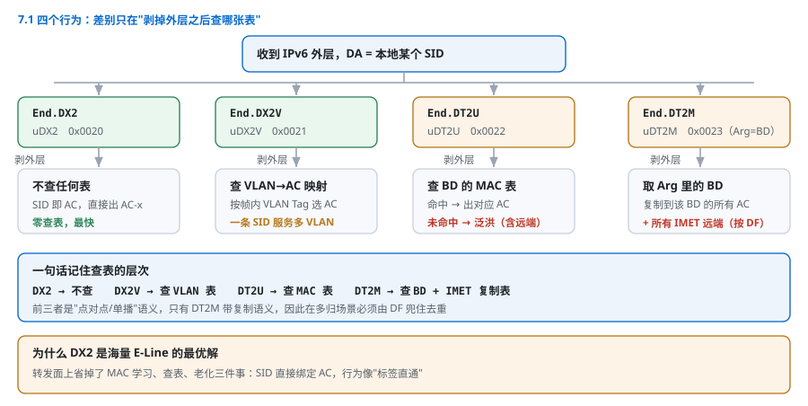
图 7-2：四个行为的处理路径（原书 Figure 7.2 重绘）
收到 IPv6 外层，DA = 本地 SID
│
├─ SID 是 uDX2 ──────────► 剥外层 ──► 直接出 AC-x
│ （零查表，最快）
│
├─ SID 是 uDX2V ─────────► 剥外层 ──► 按帧内 VLAN 查
│ VLAN→AC 映射表 ──► 出 AC-y
│
├─ SID 是 uDT2U ─────────► 剥外层 ──► 查 BD 的 MAC 表
│ ├─ 命中 ──► 出对应 AC
│ └─ 未命中 ──► 泛洪（含远端 PE）
│
└─ SID 是 uDT2M ─────────► 剥外层 ──► 取 Arg 中的 BD
└─► 复制到该 BD 的所有 AC +
所有 IMET 远端（DF 判定）
点击矢量图可放大查看。
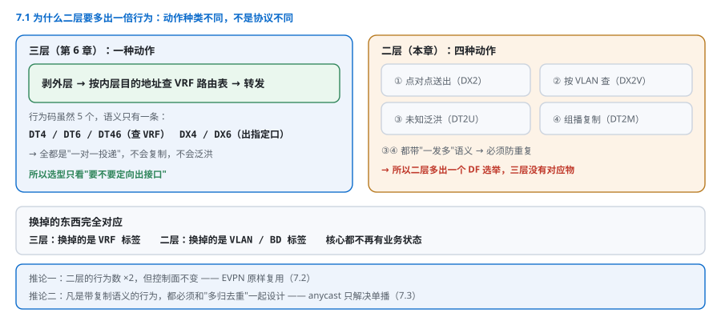
点击图片可放大查看。
| 对比项 | 三层（第 6 章） | 二层（本章） |
|---|---|---|
| 行为数量 | 4（DT4/DT6/DT46/DX4/DX6） | 4（DX2/DX2V/DT2U/DT2M） |
| 查表对象 | VRF 路由表 | MAC 表 / VLAN 表 / BD |
| 是否需要泛洪 | 不需要 | DT2U / DT2M 需要 |
| 是否有复制语义 | 无 | 有（广播/组播） |
| 多归处理 | anycast locator + ECMP | anycast SID + DF 选举 |
7.2 EVPN 怎么把 SID 送过去
EVPN route types are reused unchanged. The Ethernet A-D route per EVI and per ES, the MAC/IP advertisement route, the inclusive multicast route and the Ethernet segment route keep their existing encoding; what changes is that the NLRI now carries an SRv6 L2 Service TLV with the endpoint behavior and the SID, instead of an MPLS label.
EVPN 路由类型原样复用：per-EVI / per-ES 的 Ethernet A-D 路由、MAC/IP 通告路由、Inclusive Multicast（IMET）路由、Ethernet Segment 路由，编码全不变；变化的只是 NLRI 里的标签字段被 SRv6 L2 Service TLV 取代，TLV 内携带端点行为与 SID。
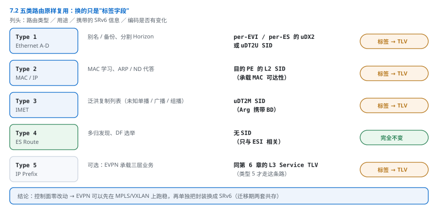
点击图片可放大查看。
| 路由类型 | 用途 | 携带的 SRv6 信息 | 有无变化 |
|---|---|---|---|
| Type 1（Ethernet A-D） | 别名/备份、分割 Horizon | per-EVI / per-ES 的 uDX2 或 uDT2U SID | 标签 → TLV |
| Type 2（MAC/IP） | MAC 学习、ARP/ND 代答 | 目的 PE 的 L2 SID | 标签 → TLV |
| Type 3（IMET） | 泛洪复制列表 | uDT2M SID | 标签 → TLV |
| Type 4（ES） | 多归发现、DF 选举 | 无 SID | 完全不变 |
| Type 5（IP Prefix） | 可选：EVPN 承载三层 | 同第 6 章 L3 Service TLV | 标签 → TLV |
The label field of the NLRI is replaced by the SRv6 L2 Service TLV defined in RFC 9252, which carries the endpoint behavior and the 128-bit SID. From the control plane's point of view nothing else changes, which is why EVPN deployments can migrate independently of the underlay.
NLRI 里的标签字段被 RFC 9252 定义的 SRv6 L2 Service TLV 取代，携带端点行为与 128 bit SID。控制面其余部分没有任何变化——这正是 EVPN 能独立于 Underlay 迁移的原因：先在 MPLS/VXLAN 上把 EVPN 跑稳，再单独换封装。
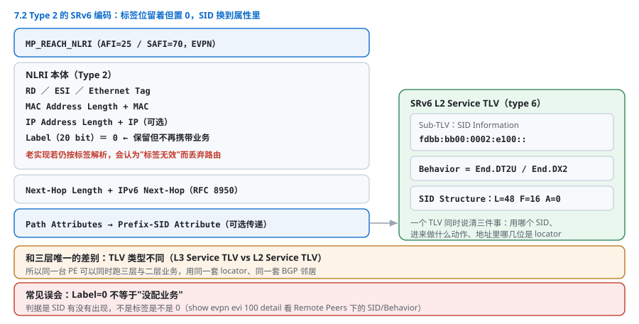
图 7-3：Type 2 路由的 SRv6 编码（原书 Figure 7.3 重绘）
MP_REACH_NLRI（EVPN，Type 2）
├─ RD / ESI / Ethernet Tag / MAC / IP / Label 字段
│ └─ Label 本来是 20 bit MPLS 标签
│ 现在：Label = 0（保留）+ 新增属性
├─ Next-Hop = IPv6（RFC 8950 要求，同 6.4.1）
└─ Prefix-SID Attribute
└─ SRv6 L2 Service TLV（type 6）
├─ Sub-TLV：SID = fdbb:bb00:0002:e100::
├─ Behavior = End.DT2U / End.DX2
└─ SID Structure（L=48, F=16, A=0）
点击矢量图可放大查看。
例 7.1：确认远端学到的 L2 SID
RP/0/RP0/CPU0:PE-1# show evpn evi 100 detail
EVI 100
...
Remote Peers:
2001:db8::2 (PE-2)
Route Type 2: 6 MAC(s)
Route Type 3: 1 IMET route
SID: fdbb:bb00:0002:e100:: Behavior: End.DT2M
2001:db8::3 (PE-3)
Route Type 1: 2 A-D route(s)（别名 + per-EVI）
SID: fdbb:bb00:0100:e100:: Behavior: End.DX2
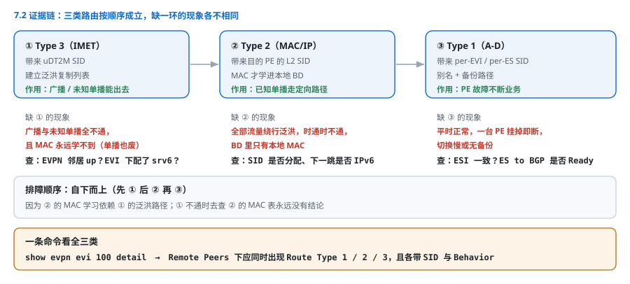
点击图片可放大查看。
排障核心证据链：有 Type 3（能泛洪）→ 有 Type 2（能学到 MAC）→ 有 Type 1（多归别名/备份），且每条都带着 SID 与行为。缺任何一类，业务表现都不同（见 7.7）。
7.3 多归与 Anycast SID
For an all-active multi-homed Ethernet segment, all PE nodes attached to the same segment are configured with the same anycast SID for that segment. Remote nodes send a single copy of the frame to the anycast SID, and the receiving PE that gets the packet forwards it on the local segment. This gives per-flow load balancing across the multi-homing PEs without any additional signaling.
全活（all-active）多归场景下，接在同一 ES 上的所有 PE 配同一个 anycast SID。远端只发一份报文到 anycast SID，收到的那台 PE 在本地网段转发出去。于是多归 PE 之间自动获得逐流负载分担，不需要任何额外信令。
Designated forwarder election still applies for broadcast and multicast traffic: only the DF forwards flooded traffic onto the segment, so that a broadcast frame is not duplicated by every multi-homing PE.
广播/组播仍需 DF（Designated Forwarder，指定转发者）选举：只有 DF 把泛洪流量送到该网段，否则一个广播帧会被每台多归 PE 各复制一份。
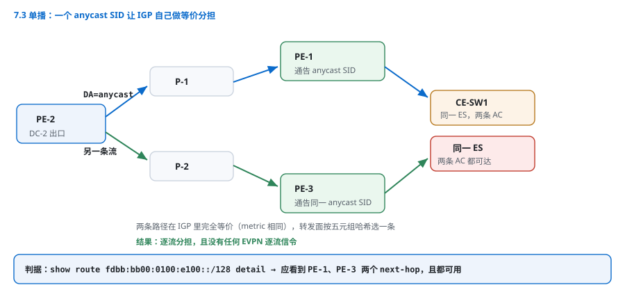
图 7-4：anycast SID 的两种效果（原书 Figure 7.4 重绘）
① 单播：ECMP 自动分担（anycast SID 在 IGP 里是多条等价路径）
PE-2 ──► DA = fdbb:bb00:0100:e100::（PE-1 与 PE-3 都通告）
├─► PE-1 ──► 本地 AC ──► CE-SW1
└─► PE-3 ──► 本地 AC ──► CE-SW1
结果：逐流分担，无需 EVPN 信令
② 广播：必须只发一份
PE-2 ──► DA = anycast SID
├─► PE-1（DF） ──► 转发到 ES ✔
└─► PE-3（非 DF）──► 丢弃，不转发 ✘
结果：DF 选举保证去重
点击矢量图可放大查看。
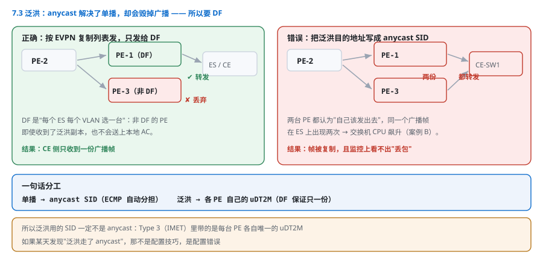
点击图片可放大查看。
7.3.1 单播与泛洪：两条完全不同的规则
这是本章最容易搞混的一点，必须分开记：
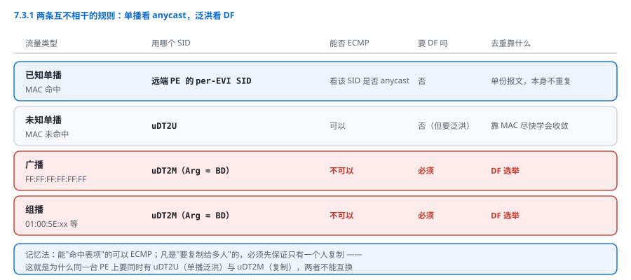
点击图片可放大查看。
| 流量类型 | SID 类型 | 是否 ECMP | 是否需要 DF | 去重靠什么 |
|---|---|---|---|---|
| 已知单播（MAC 命中） | 远端 PE 的 per-EVI SID | 取决于该 SID 是否 anycast | 否 | 单份报文，无重复 |
| 未知单播（MAC 未命中） | uDT2U |
可以 | 否（但会泛洪） | 靠 MAC 尽快学会以收敛 |
| 广播 | uDT2M |
不可以 | 是 | DF 选举 |
| 组播 | uDT2M |
不可以 | 是 | DF 选举 |
It is worth being precise: the anycast SID provides load balancing for unicast, but it cannot be used for flooding. If flooded traffic were sent to an anycast SID, every multi-homing PE would receive its own copy and would forward it onto the same segment, duplicating the frame. The DF election exists precisely to designate a single PE per segment per VLAN for flooding.
这里要说精确：anycast SID 为单播提供负载分担，但不能用于泛洪。如果泛洪流量发给 anycast SID，每台多归 PE 都会收到一份并转发到同一个网段，帧就被复制了。DF 选举的存在意义，正是为每个网段的每个 VLAN 指定唯一一台负责泛洪的 PE。
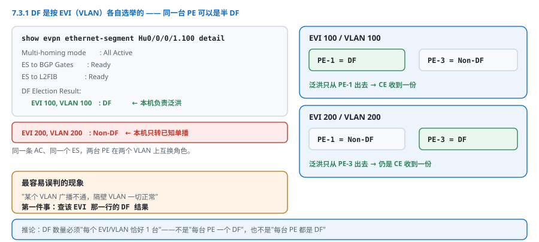
点击图片可放大查看。
例 7.2：确认 DF 与 ES 状态
RP/0/RP0/CPU0:PE-1# show evpn ethernet-segment interface HundredGigE0/0/0/1.100 detail
Ethernet Segment Id Interface Nexthops
0011.0203.0405.0607.0809 Hu0/0/0/1.100 2001:db8::3
ES to BGP Gates : Ready
ES to L2FIB : Ready
ESI type : 0
Multi-homing mode : All Active
DF Election Result:
EVI 100, VLAN 100 : DF ← 本机是 DF，负责泛洪
EVI 200, VLAN 200 : Non-DF ← 本机不是 DF，只转发已知单播
一个 PE 可以在 EVI 100 上是 DF、在 EVI 200 上不是 DF——DF 是按 EVI（VLAN） 分别选举的，这是最常见的误解来源。排障时"某 VLAN 广播不通、别的 VLAN 正常"，第一件事就是查这一行。
7.4 配置骨架
The configuration is essentially the classic EVPN configuration with two additions: the locator with micro-segment behavior, and the per-EVI allocation mode under the EVI. Nothing in the bridge-domain or ethernet-segment configuration changes.
配置基本就是经典 EVPN，只加两处：带微段行为的 locator，以及 EVI 下的 per-EVI 分配模式。bridge-domain 与 ethernet-segment 的配置一个字都不用改。
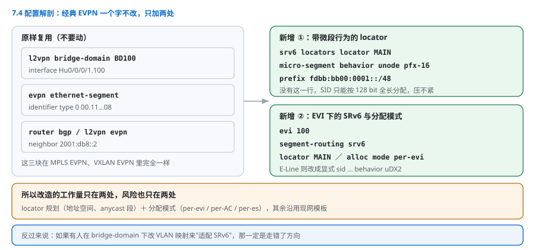
点击图片可放大查看。
例 7.3：PE 侧完整配置（E-Line + E-LAN 共用一套 locator）
segment-routing
srv6
locators
locator MAIN
micro-segment behavior unode pfx-16
prefix fdbb:bb00:0001::/48
!
l2vpn
bridge group DC1
bridge-domain BD100
interface HundredGigE0/0/0/1.100
!
evi 100
segment-routing srv6
locator MAIN
alloc mode per-evi ! 每 EVI 一个 uDT2U/uDT2M
!
!
!
!
evpn
interface HundredGigE0/0/0/1.100
ethernet-segment
identifier type 0 00.11.02.03.04.05.06.07.08
!
!
!
!
router bgp 65000
address-family l2vpn evpn
neighbor 2001:db8::2
address-family l2vpn evpn
例 7.4：按 AC 分配 uDX2（E-Line 点对点）
l2vpn
xconnect group XC1
p2p ELine-100
interface HundredGigE0/0/0/1.200
!
segment-routing srv6
locator MAIN
sid fdbb:bb00:0001:e200:: behavior uDX2 ! 直接绑到这条 AC
!
!
!
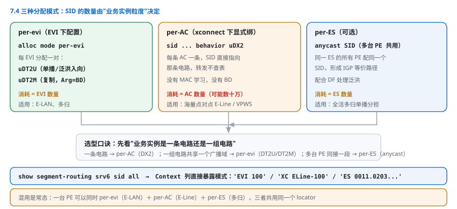
点击图片可放大查看。
两种分配模式的区别是选型的核心：
| 模式 | 生成的 SID | 行为 | 消耗 | 适用 |
|---|---|---|---|---|
per-evi |
每 EVI 一条 | uDT2U + uDT2M | = EVI 数 | E-LAN / 多归 |
| 显式绑定 | 每条 AC 一条 | uDX2 | = AC 数 | E-Line（海量点对点） |
per-es（可选） |
每 ES 一条 | uDX2 / anycast | = ES 数 | 多归 anycast |
例 7.5：确认 SID 都分配出来了
RP/0/RP0/CPU0:PE-1# show segment-routing srv6 sid all
SID Behavior Context
fdbb:bb00:0001:e000:: uN 'default'
fdbb:bb00:0001:e100:: uDT2U 'EVI 100'
fdbb:bb00:0001:e101:: uDT2M 'EVI 100'（Arg=BD）
fdbb:bb00:0100:e100:: uDX2 'ES 0011.0203...'（anycast）
fdbb:bb00:0001:e200:: uDX2 'XC ELine-100'
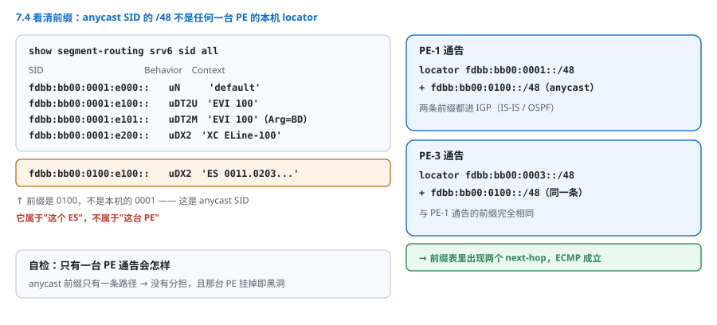
点击图片可放大查看。
注意 anycast SID 的前缀是 fdbb:bb00:0100::/48——不是本机 locator。它必须由 PE-1 与 PE-3 都通告，才能形成 ECMP。
7.5 规模：为什么二层比三层更吃 SID
Layer 2 services are more demanding on SID space than Layer 3 services, because a service instance is often much finer grained than a VRF: an E-Line is one SID per attachment circuit, while a VRF may serve thousands of customers' prefixes. Operators therefore look at the argument space and at wide micro-segments to keep the encoding compact.
二层业务对 SID 空间的压力大于三层，因为业务实例的粒度比 VRF 细得多：一条 E-Line 就是每条 AC 一个 SID，而一个 VRF 可以服务成千上万条客户前缀。于是运营商把目光投向 Argument 空间与 Wide uSID，把编码压紧。
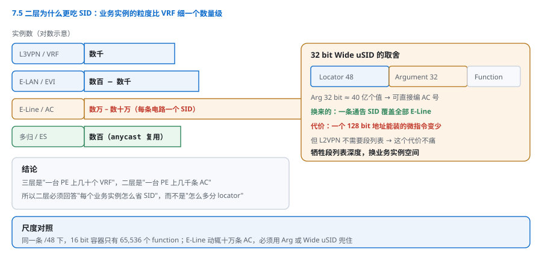
点击图片可放大查看。
租户数与 AC 数的差别决定了选型（以某城域运营商为例）：
| 业务 | 实例粒度 | 规模级 | SID 消耗 | 压缩手段 |
|---|---|---|---|---|
| L3VPN（第 6 章） | per VRF | 数千 | 数千 | per-VRF + DT46 |
| E-LAN | per EVI | 数百–数千 | 数千 | uDT2M 的 Arg 携带 BD |
| E-Line（VPWS） | per AC | 数万–数十万 | 数万+ | uDX2 + 32 bit Wide uSID |
| 多归 ES | per ES | 数百 | 数百 | anycast SID 复用 |
A 32-bit wide micro-segment makes the argument field wider, so that a single advertised SID can encode a much larger service instance space: with 32 bits, one SID covers on the order of four billion values, which is enough to encode an attachment circuit identifier directly. The trade-off is that fewer micro-segments fit in one 128-bit address, which matters only when a segment list is needed — and for L2VPN services, it is not.
32 bit Wide uSID 让 argument 字段变宽，一个通告出去的 SID 就能编码极大的业务实例空间：32 bit 约 40 亿个值，足够直接编码接入电路编号。代价是一个 128 bit 地址里能装的微指令变少——但这只在需要段列表时才重要，而 L2VPN 业务不需要段列表（与第 6 章 uSID 单指令同理）。
所以二层规模化的思路是：牺牲段列表深度，换业务实例空间。
7.6 MTU：二层比三层更狠
Note the interaction between L2 services and MTU: an L2 frame already carries its own header, and SRv6 adds an outer IPv6 header. If the underlay MTU is not increased, large frames are silently dropped, which in a storage replication service shows up as retransmissions rather than an obvious outage.
二层业务与 MTU 的相互作用要特别注意：二层帧本身带自己的头部（4 字节 802.1Q Tag、可能的 QinQ 8 字节），SRv6 再加 40 字节外层 IPv6。如果 Underlay MTU 没有提升，大帧被静默丢弃——在存储复制业务里，这表现为"重传变多"而不是明显中断，极其难定位。
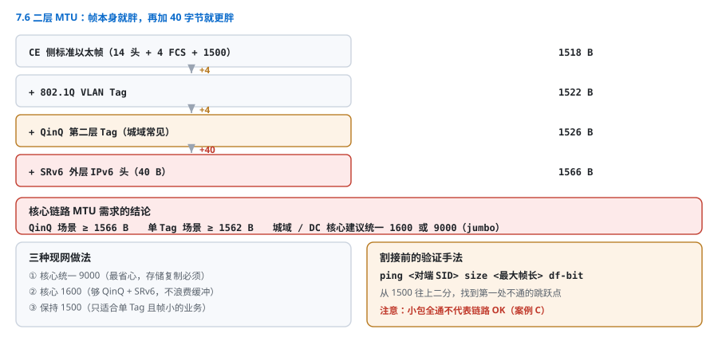
图 7-5：二层 MTU 预算（原书 Figure 7.4 后半段重绘） CE 侧标准以太帧 1518 B（含 14 B 头 + 4 B FCS） ＋802.1Q VLAN Tag +4 B → 1522 B ＋QinQ（双层 Tag，城域常见） +4 B → 1526 B ＋SRv6 外层 IPv6 头 +40 B → 1566 B ────────────────────────────────────────────── 核心链路 MTU 需求 ≥ 1566 B（QinQ 场景） 建议：城域/DC 核心统一 9000（jumbo），或至少 1600
点击矢量图可放大查看。
| 场景 | 客户帧上限 | 加 SRv6 后 | 核心 MTU 最低要求 |
|---|---|---|---|
| 普通 E-Line（单 Tag） | 1522 | 1562 | 1600 |
| 城域 E-LAN（QinQ） | 1526 | 1566 | 1600 |
| 存储复制（常配 9000 jumbo） | 9022 | 9062 | 9100 |
In a data center interconnect, the lack of jumbo frame support is often discovered late, because control plane traffic and small probes succeed. A useful practice is to run a large-frame probe between the two PEs before the service is cut over, using the largest frame size that the service is expected to carry.
在 DC 互联场景里，缺 jumbo 支持往往发现得很晚，因为控制面流量和小探针都正常。实用做法是：业务割接前，用该业务预期承载的最大帧长在两台 PE 之间做一次大帧探测。
7.7 排障：按"缺哪类路由"分支
二层故障的定位比三层更依赖 EVPN 路由类型。先看缺哪一类，现象几乎一一对应：
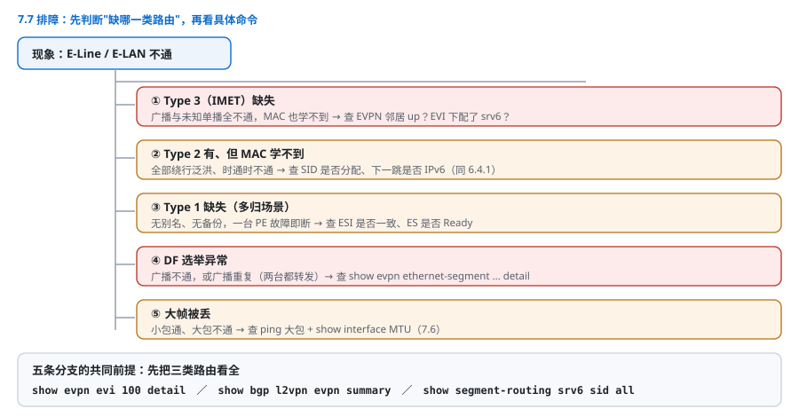
现象：E-Line / E-LAN 不通
│
├─ Type 3（IMET）缺失 ──► 广播/未知单播全不通，已知单播也学不到 MAC
│ └─ 检查：EVPN 邻居 up？EVI 下有没有 segment-routing srv6 配置？
│
├─ Type 2 有、但 MAC 学不到 ──► 单播绕行泛洪，时通时不通
│ └─ 检查：SID 是否分配（show segment-routing srv6 sid all）
│ 下一跳是否 IPv6（同 6.4.1）
│
├─ Type 1 缺失（多归场景）──► 无别名/无备份，PE 故障即断
│ └─ 检查：ESI 是否一致、ES 是否 Ready
│
├─ DF 选举异常 ──► 广播不通 或 广播重复（两台都转发）
│ └─ 检查：show evpn ethernet-segment ... detail 的 DF Election Result
│
└─ 大帧丢 ──► 小包通、大包不通（7.6）
└─ 检查：ping 大包 + show interface MTU
点击矢量图可放大查看。
| 检查项 | 命令 | 期望 |
|---|---|---|
| EVPN 邻居 | show bgp l2vpn evpn summary |
全部 Established |
| 四类路由齐全 | show evpn evi 100 detail |
Type 1/2/3 都有 |
| L2 SID 已分配 | show segment-routing srv6 sid all |
有 uDT2U/uDT2M/uDX2 |
| ES 状态 | show evpn ethernet-segment ... detail |
ES to BGP Gates / L2FIB 均 Ready |
| DF 唯一 | 同上 | 同一 EVI/VLAN 全网只有一台 DF |
| MAC 表项 | show l2vpn forwarding bridge-domain BD100 mac |
本地 + 远端都有 |
| MTU 余量 | show interface \| include MTU |
≥ 客户帧 + 40（QinQ 再 +8） |
7.8 本章小结
Layer 2 VPN over SRv6 reuses EVPN unchanged and maps the four forwarding semantics of Ethernet onto four endpoint behaviors. Multi-homing uses anycast SIDs for unicast load balancing, while the designated forwarder keeps flooding free of duplicates. The service identifier is carried in the SRv6 L2 Service TLV of RFC 9252, so the core remains free of L2 state.
SRv6 上的二层 VPN 完整复用 EVPN，把以太网的四种转发语义映射为四个端点行为。多归用 anycast SID 做单播负载分担，用 DF 保证泛洪不重复。服务标识由 RFC 9252 的 SRv6 L2 Service TLV 携带，因此核心保持零二层状态。
| 维度 | MPLS/VXLAN EVPN | SRv6 EVPN | 结论 |
|---|---|---|---|
| 控制面 | EVPN Type 1–5 | 完全相同 | 可独立迁移 Underlay |
| 服务标识 | MPLS 标签 / VNI | L2 Service TLV 里的 SID | 全局唯一，免标签规划 |
| 泛洪 | IMET 列表 + 标签 | uDT2M（Arg 带 BD） | 一个 SID 服务多 BD |
| 多归单播 | anycast VTEP / ESI | anycast SID | 效果等价 |
| 多归泛洪 | DF 选举 | DF 选举（不变） | 必须保留 |
| 海量 E-Line | 每 AC 一个标签 | uDX2 + Wide uSID | 32 bit Arg 编 AC |
| 开销 | 8 B（标签）或 50 B（VXLAN） | 40 B（IPv6） | 与 VXLAN 相当，优于纯 MPLS 差 |
| 主要风险 | 标签/VNI 规划 | MTU（QinQ 叠加） | 二层更敏感 |
一句话收束：二层没有新协议，只有新行为；真正需要重新设计的是 SID 粒度（per-EVI / per-AC）、anycast 与 DF 的分工、MTU 预算。
实战案例
案例 A：DC 间 E-Line 迁移（零丢包割接）
场景：两个 DC 之间用 E-Line 承载存储复制流量，原方案 VXLAN + 网关；改造为 SRv6 EVPN，要求迁移期零丢包。
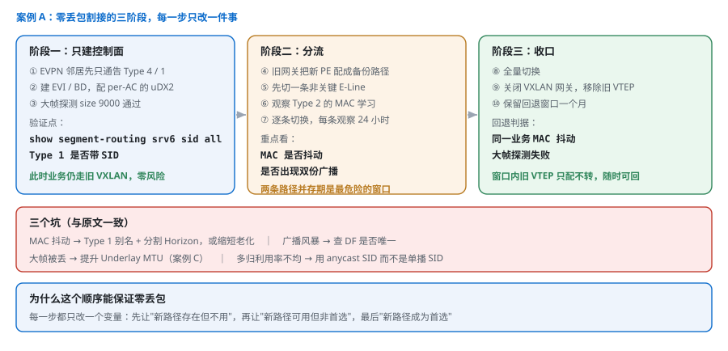
阶段一：只建控制面 ① 两端 PE 建立 EVPN 邻居，先只通告 Type 4/1，确认多归与 DF 正常 ② 建立 EVI / BD，配 uDX2 的 per-AC SID；不开业务，只验证 show segment-routing srv6 sid all 与 EVPN Type 1 是否带 SID ③ 大帧探测：ping size 9000 通过，确认 jumbo 端到端 阶段二：分流 ④ 旧 VXLAN 网关上把新 PE 配成备份路径（优先级更低） ⑤ 选一条非关键 E-Line 先切，观察 Type 2 的 MAC 学习与环路保护 ⑥ 逐条切换，每条观察 24 小时 阶段三：收口 ⑦ 全量切换，关闭 VXLAN 网关，移除旧 VTEP ⑧ 保留回退窗口一个月
点击矢量图可放大查看。
三个坑（与原文一致）：
| 现象 | 根因 | 处理 |
|---|---|---|
| 切换后 MAC 抖动 | 新旧路径并存，同一 MAC 被两边学习 | Type 1 别名 + 分割 Horizon，或缩短 MAC 老化 |
| 广播风暴 | DF 选举异常，多台 PE 同时泛洪 | 查 ES 配置与 Type 4，确认 DF 唯一 |
| 大帧被丢 | 封装后超 MTU | 提高 Underlay MTU 或调 jumbo（7.6 案例 C） |
| 多归链路利用率不均 | 用了单播 SID 而非 anycast SID | 统一 anycast SID，让 ECMP 生效 |
案例 B：城域 E-LAN 多归，广播重复导致交换机 CPU 飙升
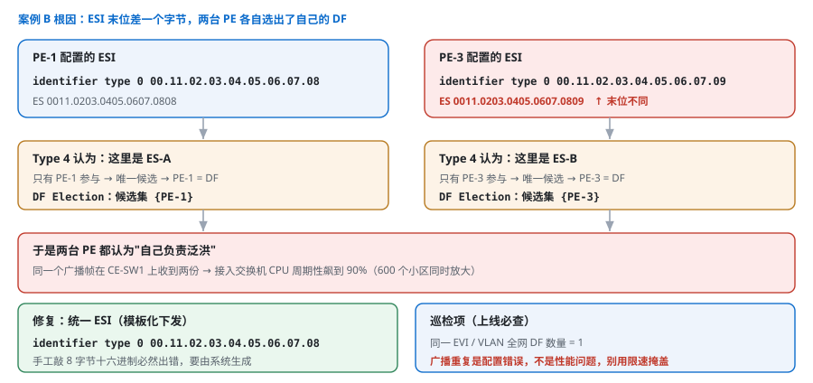
点击图片可放大查看。
现象：某城域 E-LAN 接入 600 个小区，割接到 SRv6 后，多个小区的接入交换机 CPU 周期性飙升到 90%，抓包发现每个广播帧收到两份。
定位：
① show evpn ethernet-segment interface Hu0/0/0/1.100 detail
PE-1: EVI 100, VLAN 100 : DF
PE-3: EVI 100, VLAN 100 : DF ← 两台都是 DF！
② 查 Type 4：PE-1 与 PE-3 的 ESI 配置不一致
PE-1: identifier type 0 00.11.02.03.04.05.06.07.08
PE-3: identifier type 0 00.11.02.03.04.05.06.07.09 ← 末位不同
③ 结果：两台 PE 认为属于不同 ES，各自独立选举 DF，双双成为 DF
修复与教训：
! 统一 ESI（这是手工配置最易错的一处，建议模板化生成）
evpn
interface HundredGigE0/0/0/1.100
ethernet-segment
identifier type 0 00.11.02.03.04.05.06.07.08
- ESI 必须模板化下发，手工敲 8 字节十六进制必然出错；
- 上线巡检必查 "同一 EVI/VLAN 全网 DF 数量 = 1"；
- 广播重复不是"性能问题"，是配置错误，必须修根因，不能靠限速掩盖。
案例 C：存储复制的"重传变多"
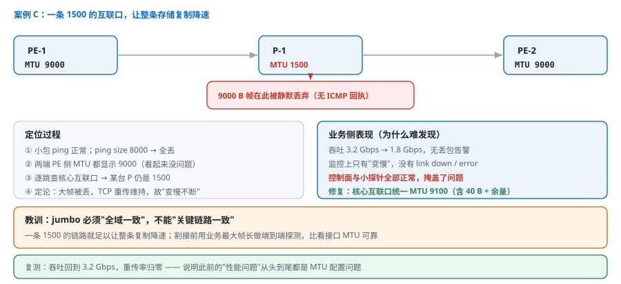
点击图片可放大查看。
现象：DC 间 E-Line 割接后，存储复制吞吐从 3.2 Gbps 掉到 1.8 Gbps，链路无丢包告警，业务只是"变慢"。
① 小包 ping 正常；ping size 8000 → 全丢
② show interface Hu0/0/0/1 | include MTU → 9000（PE 侧正常）
③ 逐跳查：核心某台 P 的互联口 MTU 仍是 1500（jumbo 未全域下发）
④ 定论：9000 B 帧在核心被丢，TCP 靠重传勉强维持，故"变慢不断"
⑤ 修复：核心互联口统一 MTU 9100（含 40 B SRv6 + 额外余量）
⑥ 复测：吞吐恢复 3.2 Gbps，重传率归零
经验：jumbo 必须"全域一致"，不能"关键链路一致"；一条 1500 的链路就足以让整条存储复制降速，而监控上看不出任何异常。
延伸阅读
- RFC 7432：BGP MPLS-Based Ethernet VPN，EVPN 路由类型 1–4 的原始定义，本章控制面的基准。
- RFC 8365：EVPN over NVO（VXLAN 等），VXLAN 侧对照。
- RFC 9252：SRv6 上的 BGP Overlay Services，含 SRv6 L2 Service TLV（Type 6）与 SID Structure，7.2 的规范依据。
- RFC 8986：
End.DX2(0x0020)、End.DX2V(0x0021)、End.DT2U(0x0022)、End.DT2M(0x0023) 及 Arg 语义。 - RFC 8584：DF 选举（基于 HRW），7.3 的 DF 机制来源。
- 交叉参考：第 6 章（L3VPN 的服务标识替换，同一套思路）、第 10 章（MTU 与地址规划）、第 15 章（阿里用 32 bit Wide uSID 承载海量 VPWS）。